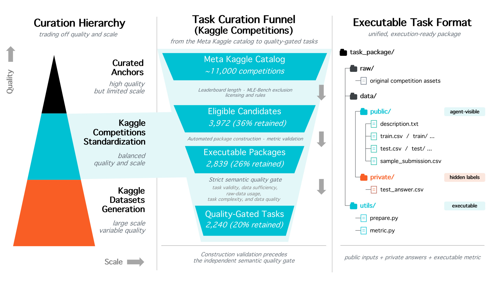
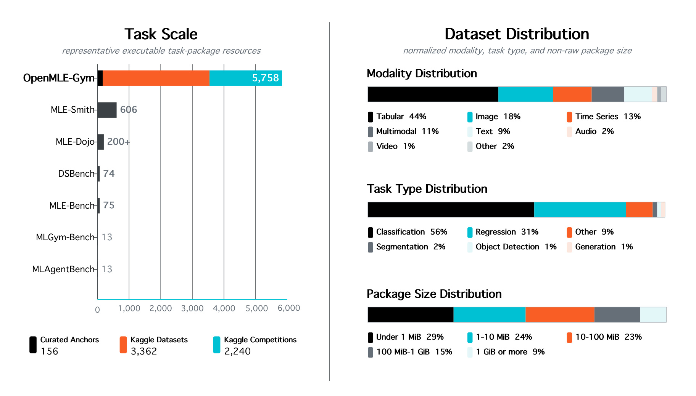
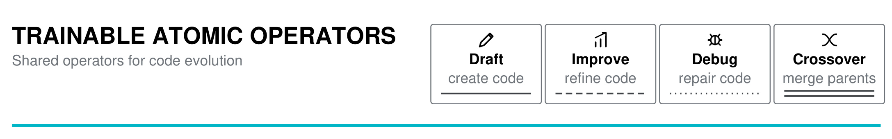
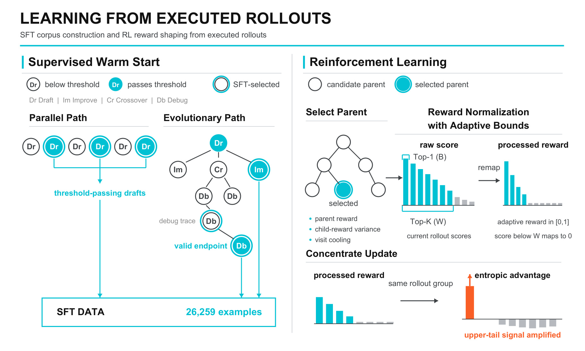
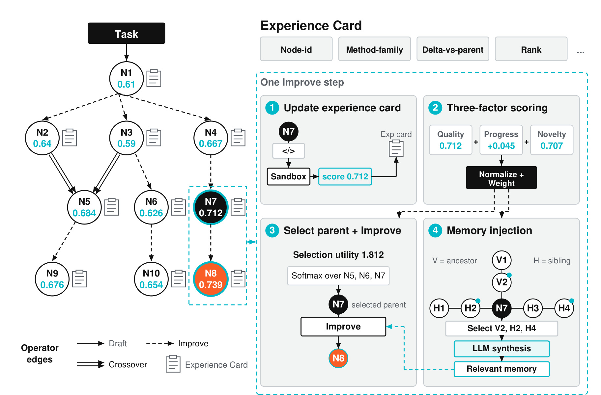
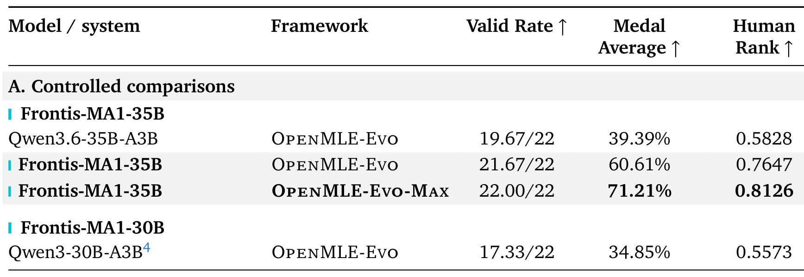
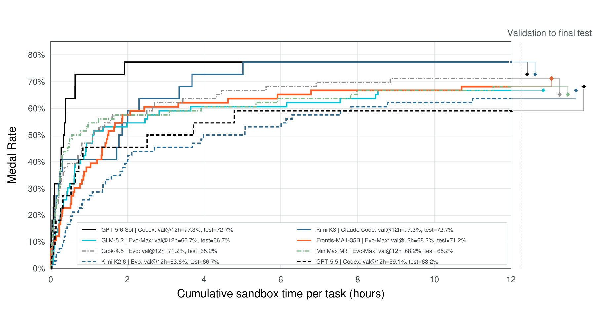
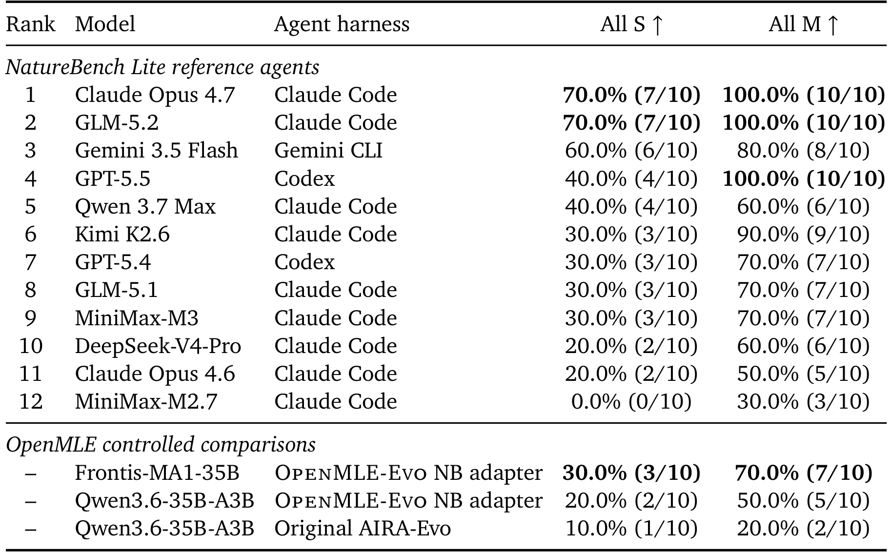

Frontis-MA1：面向机器学习工程递归自改进的 AI4AI 模型
Frontis-MA1 是 Horizon Research、Frontis.AI 与清华大学合作发布的 AI4AI 技术报告，2026 年 7 月 30 日以 arXiv v1 公开。论文不是把“递归自改进”当作抽象口号，而是把机器学习工程（Machine Learning Engineering, MLE）选作一个能运行程序、返回指标、追踪失败并重复搜索的受限试验场：先构造 5,758 个可执行环境，再用执行反馈训练 Draft、Improve、Debug、Crossover 四个程序演化算子，最后把这些算子放进长程搜索。论文唯一入口为 arXiv:2607.28568，模型权重、任务、SFT traces、训练与评测代码、sandbox 和搜索框架的官方入口为 FrontisAI/OpenRSI。
要研究“AI 改进构建 AI 的过程”，仅让模型多写几份代码并不够：任务必须可执行、结果必须可归因、局部改进能力必须能被训练，推理时的长期搜索还要把过去的成功与失败变成下一轮可用证据。现有 MLE 工作往往只覆盖环境、后训练或搜索中的一段，缺少共享接口下的完整闭环。
1. 背景和问题
“模型会写训练代码”与“模型会改进机器学习系统”不是同一件事。前者可以用一次生成是否通过单元测试来评估；后者通常要读取数据、选择验证划分、构造特征与模型、管理显存和时间、反复运行实验，再根据连续指标决定修复哪一处或保留哪条分支。一个程序即使能运行，也可能泄漏标签、错误读取测试集、生成无效 submission，或在验证集上变好却无法泛化到隐藏测试集。MLE 因而提供了比普通代码题更接近 AI4AI 的反馈闭环：候选程序是可检查的 AI 产物，sandbox 执行给出可比较结果，搜索过程又能明确记录“哪个修改造成了什么变化”。
论文把以往路线概括为三类。第一类在推理时设计树搜索、population search 或 agent harness，通过执行—修改—再执行提高最终解；第二类建设 MLE-Bench、MLE-Dojo 一类任务和环境；第三类使用可执行分数做 SFT 或 RL，把工程经验内化进模型。问题在于三类工作使用的任务格式、动作空间、反馈字段与发布边界往往不同：环境可能只能评测而不能批量产生训练轨迹，训练得到的 agent 也未必能无缝进入长程进化框架；搜索器若把全部历史不断塞进 prompt，成本会增长，失败经验还会污染后续分支。
OpenMLE 的回答是把“环境—算子学习—长程搜索”做成共享栈。OpenMLE-Gym 定义可执行任务包与隔离反馈；OpenMLE-ERL 在同一环境上训练四种可复用的程序变换；OpenMLE-Evo 在推理时组合这些变换，并维护结构化经验。Frontis-MA1-35B 既是这套训练栈的产物，也是 Evo 循环中实际提出修改的 meta-evolution agent。这个设计的核心不是让模型背下某个 Kaggle 解法，而是让“起草、改进、排错、重组”成为可迁移的局部操作，再由搜索控制器决定何时调用。
这里必须收紧论文标题中的 RSI 含义。作者在定位图和官方仓库中把当前工作放在 meta-evolution：系统训练“改进者本身”，并让它在后续 MLE 搜索中继续产生更好的程序。它没有证明模型能修改自身权重、训练制度和目标后无限迭代，也没有覆盖开放网络、真实组织权限、长期线上维护或安全治理。论文的第三方评测仍是 MLE-Bench Lite 与 NatureBench Lite，奖励来自预定义 evaluator，资源与动作都受 sandbox 约束。因此更准确的表述是：论文验证了受限、可执行 MLE 域中的可训练改进算子与经验驱动搜索，提供了通向 RSI 的工程研究栈，而不是证明开放域自主递归进化已经实现。
这个边界也决定了证据应如何归因。环境数量只能说明可执行任务供给，SFT/RL 的对照才说明局部改进能力是否被模型吸收，固定模型的 harness 对照检验搜索策略，Evo-Max 则是模型、经验先验与异步搜索的组合上限。若把四层证据合成一个最终分数，就会把“训练了更好的改进者”和“给改进者更强的搜索器”混为一谈，也无法回答系统究竟在哪一层发生进步。
对推荐系统研究者，这个问题也很具体。排序或召回实验同样包含数据切分、特征处理、离线指标、资源限制和多轮调参；但线上指标、用户反馈和隐私约束远比 Kaggle 更复杂。Frontis-MA1 值得看的地方，不是把 71.21% 直接迁移成推荐收益，而是它展示了如何把实验任务封装成可验证环境、如何将失败运行转成 Debug 监督、如何在多个有效方案之间做 Crossover，以及如何把“模型能力提升”和“搜索框架提升”分开测量。
2. 方法
2.1 OpenMLE-Gym：把任务变成可执行环境
OpenMLE-Gym 的最小单位不是一段自然语言题目，而是能被 scheduler 和 sandbox 执行的 task package。包内保留原始资产，向 agent 暴露任务描述、训练数据、测试输入和 sample submission，同时把测试答案放在私有区域；prepare.py 负责确定性切分与格式准备，metric.py 负责把 submission 变成方向明确的标量分数。这样，训练阶段和评测阶段看到同一种任务契约，模型拿不到隐藏答案，控制器却能获得运行状态、错误、耗时、资源与指标反馈。任务来源按质量—规模权衡分三条路径：156 个 Curated Anchors 来自人工挑选的论文或 benchmark，任务定义可靠但规模有限；3,362 个 Kaggle Dataset tasks 扩展已有 MLE-Smith 管线；2,240 个 Kaggle Competition tasks 从约 11,000 个 competition 开始，依次做 leaderboard 长度、MLE-Bench 重叠、许可证与规则筛查，再实际执行任务包并通过 metric 与语义质量门。语义门同时检查任务有效性、数据充足度、原始资产使用、复杂度和数据质量，排除退化标签、泄漏、坏标注或无法评分的伪任务。

Figure 3 要从左到右读。左侧不是三个并列数据源，而是质量与规模的梯度：Curated Anchors 靠人工保证语义，Kaggle Datasets 提供规模，Competitions 位于中间。中间漏斗给出可核验损耗：约 11,000 项先缩到 3,972 个 eligible candidates，再得到 2,839 个可执行包，最后只有 2,240 个通过严格质量门。右侧目录树解释“可执行”的边界：public 数据和 description 对 agent 可见，private/test_answer.csv 隐藏，prepare.py 与 metric.py 让同一包既能训练也能评测。图中两个门不能混为一谈：程序能运行、metric 能返回标量只证明工程完整性，后面的语义门才排除任务无效或数据泄漏；这也是执行反馈能够成为训练信号的前提。
三条路径合并后得到 5,758 个环境，由 156 + 3,362 + 2,240 精确组成。论文称其覆盖八种模态和六类任务：模态包括 tabular、image、time series、multimodal、text、audio、video 与 other；任务包括 classification、regression、other、segmentation、object detection 与 generation。这里的覆盖面不能只看任务数：规范化后多模态占 11%，分类 56%、回归 31%，两者合计 87%，说明规模主要仍来自监督预测，复杂生成与检测只占少数。

Figure 4 左半把 OpenMLE-Gym 与已有可执行任务资源放在同一数量轴上，5,758 的规模显著高于图中其他资源；下方色条再次显示主要增量来自 Kaggle Datasets 与 Competitions，而不是人工 anchor。右半把“规模”拆成结构：tabular 44% 最大，image 18%、time series 13%、multimodal 11%、text 9%，audio/video 更少；包大小从 1 MiB 以下到 1 GiB 以上都有，意味着 sandbox 既要处理轻量表格，也要处理更重的媒体资产。它支持作者“训练环境足够多样”的主张，但也暴露外推限制：分类与回归占比很高，公开 Kaggle 任务的目标与干净 evaluator 仍不同于持续漂移、反馈延迟的生产推荐系统。
2.2 OpenMLE-ERL：四个原子算子的 SFT 与 RL
OpenMLE-ERL 不直接训练一个固定的完整搜索轨迹，而是训练四个可组合算子。Draft 从任务描述和数据起草完整程序；Improve 读取一个可执行父程序及其分数/反馈，在有效基础上提升；Debug 针对异常、超时、格式错误或无效 submission 修复；Crossover 读取两个父程序，把互补的特征、解析器、模型或训练策略重组。局部技能与搜索控制器分离后，同一 Frontis-MA1 可以被不同 harness 调用，训练也不必覆盖所有可能的树结构。

这个 Figure 5 顶部原始子区域把共享动作词表压缩得很清楚：Draft 的职责是 create code，对应从零产生完整候选；Improve 是 refine code，输入已有有效方案和反馈；Debug 是 repair code，针对异常或无效提交；Crossover 是 merge parents，必须同时读取两条分支。卡片下方不同线型还会在搜索树中标识操作来源。这里强调“atomic”并不是说任务很短，而是把长程工程过程拆成语义稳定的局部变换；SFT、RL 与 Evo 调用同一接口，模型学到的 Improve/Debug 不会在推理时换成另一套 prompt 行为。完整的监督与奖励回路在后面的 Figure 7 展开，长期组合方式则由 Figure 9 说明。
SFT 暖启有两条采样路径。并行路径独立执行完整 Draft，只保留过阈值的有效方案，产生 17,245 条 full-response 样本；进化路径在已执行程序上调用 Improve、Debug 和 Crossover，从高质量局部轨迹中抽取有用步骤，产生 9,014 条 trajectory-step 样本，合计 26,259 条。若有效 endpoint 经过连续 Debug 才出现，系统会回溯到之前的非 Debug 操作，并让 LLM 判断修复链中哪些步骤值得监督。收集采用预算自适应停止：达到接受样本配额或耗尽执行预算即停，把更多验证算力留给成功稀疏的困难任务；训练数据还与全部评测 benchmark 去重。
RL 首先要解决不同任务指标不可比。设原始指标经过方向统一后为 (\tilde{s})，固定的最好/最坏边界为 (b_{\mathrm{best}},b_{\mathrm{worst}})，基础奖励写为：
符号解释：(\tilde{s}) 已把“越小越好”的 loss 取反到“越大越好”；两个 (b) 给出任务标尺；(\alpha>0) 控制映射曲线。固定 leaderboard 极值可能远离当前 policy 的分数区间，使不同程序挤在几乎相同的奖励上，因此实现还从历史与当前 on-policy 分数排序得到动态上界 (B_{\mathrm{dyn}}=x^{(1)}) 与下界 (W_{\mathrm{dyn}}=x^{(\min(16,K))})，并将下界再下扩四分之一差距。这个 Top-1/Top-K 范围随 policy 前沿移动，低于最终下界的候选映射为零。
映射到可分辨的 (r_{\mathrm{proc}}) 后，系统用熵优势把更新集中到组内上尾：
符号解释：(G) 是同一 rollout group 大小，(r_{\mathrm{proc},i}) 是候选 (i) 的处理后奖励，(\beta) 控制权重集中程度。实现先令 (c_i=r_{\mathrm{proc},i}-\max_j r_{\mathrm{proc},j})，以 (q_i(\beta)=\exp(\beta c_i)/\sum_j\exp(\beta c_j)) 分配质量，再二分选择 (\beta)，使 (D_{\mathrm{KL}}(q^\beta|\operatorname{Unif}(K))\approx\log 2)。也就是说集中程度受固定信息预算约束，不是随意放大最好样本。实际留一优势使用 (e_i=\exp(\beta c_i))、(Z_{-i}=\frac{1}{K-1}\sum_{j\ne i}e_j) 与 (A_i=e_i/(Z_{-i}+10^{-12})-1)，数值稳定项避免分母为零。

Figure 7 左半把两类 SFT 证据分开：并行 Draft 只有过阈值才进入数据，进化路径允许一个无效节点经过多次 Debug 后出现有效 endpoint，并从修复链中选择真正有用的局部操作。右半从“选什么父状态”开始：父奖励、子节点奖励方差与访问冷却共同决定 selected parent；随后 Top-1/Top-K 自适应边界把示例中的七个非零 task score 压成四个非零 processed reward，最后熵优势强调上尾。图的价值在于说明执行反馈不是一个简单 pass/fail 标签，而是同时控制数据保留、状态采样、跨任务标尺与组内 credit assignment。
RL 还要避免总在同一个 incumbent 上训练。对父程序 (p)，论文使用：
符号解释：(R_p) 偏向质量较高的父节点；子节点回报方差寻找“算子结果仍不确定、仍有学习信号”的区域；(C_p) 是随访问次数下降的冷却系数，防止单一 incumbent 垄断 rollout。异步收集再把 generation-and-execution group 独立放入队列，trainer 消费已完成组，不必等待最慢 sandbox job；附录 40 个 matched steps 中同步平均 97.0 分钟、异步 50.8 分钟，墙钟比为 1.91 倍。
2.3 OpenMLE-Evo：从局部算子到长程搜索
OpenMLE-Evo 采用 population/tree 式循环，但把“搜索历史”改造成可查询状态。每次 sandbox 评估后，控制器确定性写入 experience card，记录节点标识、方法族、父节点相对增益、rank、程序与执行状态、耗时和 error signature；任务级 experience board 则从全部卡片重算方法族覆盖、各族最佳节点、低探索方向、重复失败、分数趋势与 parent graph。它不急着让 LLM 总结每个节点，只有选定下一算子和父节点后，才检索有界的祖先、兄弟或相关节点，并缓存相对父节点的 method overview 与可复用/应规避证据。父节点选择不只看当前绝对分数；对候选 (i)，其 utility 与采样概率为：
符号解释：(\tilde{s}_i) 是归一化当前质量，(\tilde{\Delta}_i) 是相对最强父节点的正向进步，(\nu_i) 是分支或方法新颖性，三个 (\lambda) 控制利用、进步与探索，(\tau) 是 softmax 温度，(\mathcal{I}) 为候选父节点集合。只按 score 会丢掉当前略弱但进步快、结构互补的分支；三因子选择让这种分支仍有机会进入 Improve 或 Crossover。

Figure 9 左侧搜索树显示每个 N 节点都和执行分数、experience card 绑定，边类型对应 Draft、Improve 与 Crossover。右侧以一次 Improve 为例：N7 运行后先更新卡片，再把 quality 0.712、progress +0.045、novelty 0.707 归一并加权，和 N5/N6 一起 softmax 后选出父节点；只有这时才从纵向 ancestor 与横向 sibling 中选 V2、H2、H4 做 LLM synthesis，把 relevant memory 注入下一次 Improve。因而 memory 的作用不是累积更多文字，而是根据当前算子选取能改变下一动作的证据；Debug 应看到错误链，Crossover 应分别看到两条父分支的互补点，Improve 则关注父方案与附近兄弟的增益/退化。
这一机制把训练和搜索接在同一闭环上：ERL 学到的是局部程序变换，Evo 决定在长时程中如何组合；执行结果既更新搜索状态，也能反过来形成下一代训练经验。真正可复用的贡献是共享动作空间与可归因反馈：模型能力和搜索策略可以分别替换、分别测量，再在端到端系统里组合。 但 Evo-Max 还使用 benchmark-independent experience priors 和异步搜索，属于更强的搜索配置；它的结果不能回填成 Frontis-MA1 单模型的一次生成能力。
3. 实验结果
3.1 评测协议先于分数
主评测使用 MLE-Bench Lite 官方 22 个任务。除非另行说明，每个 OpenMLE 配置对每个任务使用 单张 RTX 4090、显存上限 12GB、12 小时 sandbox 预算，默认进行 3 次独立 evaluation epochs；表中 Valid Rate 是 22 个任务中产生有效 submission 的平均数量，Medal Average 汇总达到 Kaggle 奖牌门槛的结果，Human Rank 衡量相对人类 leaderboard 的位置。外部 Codex、Claude Code、Gemini CLI 参考因推理与 sandbox 成本较高，有些只运行一次，论文也明确保留为 point estimate。因此同表排名可以提供系统背景，但最可靠的是固定模型或固定 harness 的相邻控制比较。
OpenMLE-Evo-Max 在标准 Evo 上增加两项：从公开 competition artifacts 蒸馏、与具体 benchmark 无关的经验先验，以及异步搜索。它改变了搜索系统和资源调度，不是单纯“给同一模型多一点推理 token”。报告分数也都是 model–harness configuration 的结果：GPT-5.5 + Codex、GPT-5.6 Sol、Kimi K3 等名称不能和裸模型 one-shot 能力直接相等。
3.2 训练提升与搜索提升必须分开读
固定标准 OpenMLE-Evo，Qwen3.6-35B-A3B base 的 Medal Average 是 39.39%、Valid Rate 19.67/22、Human Rank 0.5828；替换成 post-trained Frontis-MA1-35B 后分别达到 60.61%、21.67/22、0.7647。因此 39.39→60.61 才是论文对 35B 后训练收益的主要控制证据，绝对提升 21.22 个百分点。继续把 harness 换成 OpenMLE-Evo-Max 后，Frontis-MA1-35B 达到 71.21%、22.00/22 与 0.8126；这一行是训练模型加更强搜索的端到端结果，不是再一次纯模型增益。

Table 1 Panel A 把三个层次放在连续三行。第一、二行框架同为 OpenMLE-Evo，唯一核心变化是 Qwen base 换成 Frontis，因而可以把 21.22 点 Medal Average 提升归于 execution-grounded SFT+RL；Valid Rate 同时增加 2 个任务，说明收益不只是奖牌阈值附近的重排。第三行保留 Frontis 模型但换成 Evo-Max，Medal Average 再从 60.61% 到 71.21%，Human Rank 从 0.7647 到 0.8126，代表经验先验与异步长程搜索带来的系统增益。表中 30B base 的 34.85% 是 companion replication 的起点，完整续表给出同方向结果；它降低了“只对 35B checkpoint 偶然有效”的疑虑，但并不消除训练数据、模型家族和搜索预算耦合。
另一组固定模型比较也支持 harness 贡献：在同一个 Frontis-MA1-35B checkpoint、相同 12 小时任务预算下，original AIRA-Evo 的 Medal Average 为 53.03%，OpenMLE-Evo 为 60.61%。这说明结构化 experience card、质量/进步/新颖性选择和按操作构造上下文不只是叙述性的模块替换。不过 Evo-Max 的 71.21% 还引入经验先验和异步多 GPU 搜索，和标准 Evo 不是严格同复杂度；论文正确地把它标为端到端上限，而非 post-training 的单独消融。
3.3 长程搜索、效率与案例证据
只看最终奖牌率无法判断搜索是否真的利用历史。Figure 12 按每任务累计 sandbox 时间画 22 个 Lite 任务的 best-so-far validation Medal Rate，并把 validation 选中的节点连接到最终隐藏测试结果。Frontis-MA1-35B + Evo-Max 在 12 小时 validation 约 68.18%，最终测试 71.21%；GPT-5.6 Sol 与 Kimi K3 的最终值均约 72.73%。作者的主张不是 Frontis 绝对超越所有大模型，而是在一张消费级 RTX 4090、12GB 限制的单任务执行环境中，用 35B meta-evolution agent 接近这些更强系统。

Figure 12 的台阶曲线显示不同系统何时跨过任一 Kaggle medal 阈值。Frontis 的橙线在早期获得有效方案后仍多次上升，直到接近 12 小时才达到约 68.2% validation，说明额外预算没有只被 Debug 消耗；右侧菱形把 validation 与 final test 分开，Frontis 最终为 71.2%，并未出现依靠验证集节点选择导致的整体崩塌。图也提醒读者，黑线 GPT-5.6 和蓝线 Kimi K3 早期更快，最终仍略高；Frontis 的优势是开放栈、较小模型与可解释的长程改进过程，而不是所有预算区间的统治性最优。
两个任务轨迹给出“后期改进来自哪里”的细证据。leaf-classification 中，Debug 先建立图像和表格可行分支，Crossover 保留两者互补证据，最后 Improve 把稳定融合方案升级到 ConvNeXt-Tiny；后期 Improve/Crossover 占总验证增益的 85.0%，最终 validation Human Rank 0.7713、hidden test 0.9455 并获 Bronze。mlsp-2013-birds 中，Debug 先修 submission，后续 Improve/Crossover 构造音频多分支，合计贡献 91.9% 验证增益，最终 hidden test Human Rank 0.8889 并获 Silver。它们支持“不是一直修同一程序”的机制判断，但仍是两个挑选案例，不能代替全任务消融。
效率比较覆盖 66 个匹配 task–run。相对 original AIRA-Evo，OpenMLE-Evo 把 total model tokens 从 129.3M 降至 75.3M（-41.7%），prompt tokens 从 83.5M 降至 41.5M（-50.3%），evaluated nodes 只从 3,430 降到 3,004（-12.4%）；与此同时 new-best validation updates 从 229 增至 246。token 降幅远大于节点降幅，说明主要节省来自 operation-conditioned bounded context，而不是简单少搜索。right-whale 案例还显示三因子选择把一个 score 排第六、gain 排第一的互补父节点选择概率从 10.47% 提到 17.09%，随后 Improve child 获得更高 validation/held-out AUC。这些证据比单纯报告更高最终分更能支撑 Evo 组件设计。
3.4 NatureBench：模型替换与搜索替换的两组迁移
NatureBench Lite 是 held-out transfer：固定 10 个任务，覆盖六个科学领域、六种模态族与四类 ML 任务；沿用隐藏 evaluator、有效性规则、禁用 web search，每任务搜索预算为四小时。不同论文任务的指标方向和尺度不同，作者用相对已发表 SOTA 的有向差距：
符号解释：(m) 是 agent 提交结果，(m_{\mathrm{SOTA}}) 是论文报告的基准，(\operatorname{dir}\in{-1,+1}) 统一最小化/最大化方向。Match-SOTA（All M）统计 (g\ge 0) 的任务比例，Surpass-SOTA（All S）要求 (g>0.1)。OpenMLE 的 NatureBench adapter 只改任务接口、资源调度和反馈 plumbing，不暴露隐藏标签或论文解法。

Table 2 底部三行是关键，而不是上方参考 agent 排名。固定同一个 OpenMLE-Evo NB adapter，只把 Qwen3.6-35B-A3B base 换成 Frontis-MA1-35B，All M 从 50%（5/10）升到 70%（7/10），All S 从 20% 升到 30%；这隔离的是训练模型迁移。反过来固定 Qwen base，把 original AIRA-Evo 换成 OpenMLE-Evo adapter，All M 从 20%（2/10）升到 50%（5/10），All S 从 10% 升到 20%；这隔离的是搜索框架迁移。两组都改善，才支持“训练出来的算子与经验驱动框架均能跨出 competition-style MLE”的结论。样本只有 10 个任务，每 10 个百分点就是一个任务，因此应把 50→70、20→50 看作有方向性的 held-out 证据，而不是稳定精确的总体效应估计。
跨模态切分提供另一层检查。在 MLE-Bench Lite 的 image、text、tabular/structured、audio、multimodal 五组中，固定 OpenMLE-Evo 后 Frontis 相对 base 的平均 Human Rank 全部提高，组级 Medal Rate 从不下降；新增奖牌按五组分布为 +2/+4/+1/+4/+3。它排除了总提升完全由单一表格或图像任务驱动，但 audio 和 multimodal 各只有两个任务，分组统计仍较粗。综合看，实验较有说服力的部分是控制变量链：base→Frontis、AIRA→Evo、Evo→Evo-Max、MLE-Bench→NatureBench 分别回答不同问题；最容易被误读的部分则是把这些系统级结果压缩成“Frontis 单模型 71.21%”。
4. 总结
4.1 我的判断
Frontis-MA1 的贡献是一套能做归因的 AI4AI 研究接口。OpenMLE-Gym 把原始数据、隐藏答案、准备脚本、metric 与 sandbox 反馈固定成任务契约；OpenMLE-ERL 把 MLE 改进拆成四个可训练原子操作；OpenMLE-Evo 再用结构化经验、三因子父节点选择和按需记忆把局部能力扩展到长程搜索。实验没有只给 combined score，而是用 39.39→60.61 隔离训练、53.03→60.61 隔离标准 Evo、60.61→71.21 展示更强搜索上限，再用 NatureBench 的 50→70 与 20→50 检查两个组件的迁移，这是报告最扎实的部分。
对推荐与大模型工程，最可迁移的不是具体模型，而是任务封装和证据账本。离线召回/排序实验可仿照 task package 固定数据版本、时间切分、私有测试、资源预算和评价脚本；Improve/Debug/Crossover 能分别对应单分支调优、失败修复和多模型/特征融合；experience card 可记录模型族、相对父版本增益、延迟、显存、失败类型和数据口径，让搜索器避免反复走同一条失败路线。真正上线前还必须把多目标约束、用户分层、反馈延迟、隐私与安全审核纳入 evaluator，不能把离线 AUC 当作唯一 reward。
4.2 局限与后续跟进
第一，递归自改进的范围有限。被改进的是 sandbox 内 MLE 程序，模型权重与目标并未在同一闭环中自主迭代，不能外推为开放域 RSI。第二，benchmark 与真实工程不同。Kaggle 奖牌和 Nature 论文指标不覆盖数据漂移、值班维护、组织权限、线上风险与长期用户价值。第三，系统组件和计算耦合。Evo-Max 加经验先验与异步搜索，71.21% 不是纯 checkpoint 分数；完整复现还要准备 22×3 个长达 12 小时的任务运行。第四，任务分布仍偏监督预测。5,758 环境中分类与回归合计 87%，对开放式研究、因果实验和持续学习的代表性有限。第五，奖励与数据治理仍可能失真。论文已观察到随机打乱 sample submission 等 reward hacking，并用 o3-mini judge 在执行前拦截、赋 -0.5 奖励；judge 自身的误判和训练数据去重完整性仍需外部复核。
后续应优先做三件事。其一，复现官方仓库的最小闭环：先跑一个 OpenMLE-Gym task，分别观察 Draft、Debug、Improve、Crossover 的输入输出，再验证 experience card 是否能追溯最终增益。其二，用相同 checkpoint 和 12 小时预算复查 AIRA-Evo、OpenMLE-Evo、Evo-Max，报告 token、节点数、墙钟、Valid Rate 与 hidden test，而不是只抄 Medal Average。其三，把 task contract 迁移到一个时间切分的推荐离线任务，加入延迟/显存约束和泄漏检查，测试三因子父节点选择是否真的比 score-only 更能保留互补召回或排序分支。只有这些跨环境复现稳定成立，才有理由把“可执行 MLE 中的 meta-evolution”推进为更广义的可验证 AI4AI。